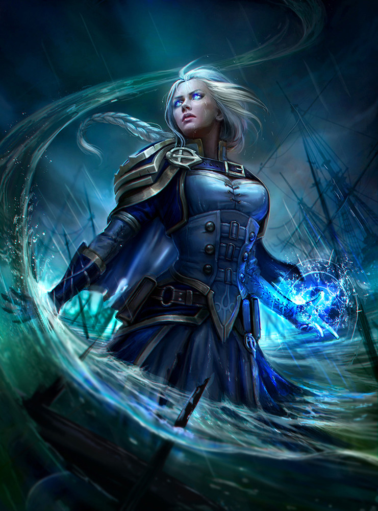

Биография
Ранние события
Джайна большую часть жизни провела в обстановке сдержанного изобилия, характерного для прибрежного королевства её отца – Кул Тираса. В юности она была близкой подругой принца Артаса и принца высших эльфов Кель'таса, которые часто соперничали за её расположение. В конечном итоге, Артас был более успешен, но и его постигла неудача. Слухи о зародившемся между Артасом и Джайной романе поползли по Лордерону, что заставило смущённых влюблённых старательно скрывать подробности своих встреч.
Довольно рано Джайна связала себя с мистической магией, исследуемой Кирин Тором, таинственным правящим советом Даларана. Под заботливым надзором волшебников Даларана (сам Антонидас стал её наставником) она овладела искусством магии, но, что гораздо важнее, охватила свежим проницательным взглядом весь хаотический поток событий в обществе людей. Её глаза освободились от шор традиционной ненависти и страха её предков, и бесконечные дебаты в правящем совете Альянса предстали перед глазами Джайны тем, чем всегда были на самом деле – вакханалией парализующего страха, который в конце концов приведёт к гибели всего человечества.
Отношения с принцем Артасом
Из-за своих обязанностей Артас и Джайна с трудом сохраняли близкие отношения. Но им это удавалось. Артас даже пребывал часто в Даларане, встречая Джайну между или после занятий. Джайна очень удивлялась как ему удавалось терпеть "эту магию". Но частая близость не продолжалась долго: перед одним из праздников Зимнего Покрова Артас признался, что боится совершить неправильный поступок и хотел остаться на время друзьями, ведь он должен был научиться править будущим королевством, а Джайна сосредоточилась на обучении магии.
Третья Война
Много лет спустя Антонидас, тщетно пытавшийся узнать больше о Чуме, стремительно распространявшейся по Северному Лордерону, встретил Пророка, который потребовал, чтобы Антонидас немедленно вел своих людей через море, в земли Калимдора. Антонидас счел его за обычного сумасшедшего, но Джайна, наблюдавшая за их беседой из-за укрытия, ощутила огромную мощь в незнакомце и решила, что в его словах есть смысл, и они должны внять его предостережениям. Однако её учитель решил иначе и вместо этого отправил её встретиться с Артасом и вместе больше узнать о необычной эпидемии Чумы, охватившей северную часть городка Брилл.
Прибытие в Калимдор
По прибытии на Калимдор, Джайна обнаружила, что там уже обосновались орки. Заподозрив, что, возможно, орки последовали за ними от самого Лордерона, Джайна решила дать им отпор, чего только и дожидался Гром Адский Крик. После разрушительного сражения с орками, Джайна решила как можно быстрее найти место, где она могла бы сдерживать их атаки. Пик Каменного Когтя был не только отличной защитой, но откуда-то изнутри Джайна ощущала огромную силу. Потерпев поражение в обороне Пика, Джайна повела небольшую экспедицию внутрь пещер, надеясь отыскать силу, которая поможет ей одолеть орков. Однако она поняла, что за ними следуют по пятам.
Основание Терамора
После поражения Легиона в битве на горе Хиджал, Джайна собрала выживших на укрепленном острове, находящемся на восточном побережье Калимдора, ныне названный Терамор. Точная дата основания Терамора неизвестна (источники не дают точного ответа на вопрос, был ли он основан до или после битвы на горе Хиджал), однако роль этой цитадели неоспорима в истории основания земель, принадлежащих Оркам, названных Дуротар. Когда Рексар потребовал объяснений о людях, совершающих набеги на Дуротар, а также попытку убийства Вождя, Джайна отрицала любую причастность.
Старая ненависть
Прибытие новой армии людей на Калимдор стало для Джайны полной неожиданностью. Она никак не могла объяснить новые нападения на орков, пока не выяснила, что за всем этим стоит ни кто иной, как её собственный отец и флотилия Кул Тираса. Джайна попыталась убедить Даэлина, что орки не представляют больше угрозы для Альянса, но адмирал, бывший ветераном Второй Войны, не стал слушать дочь. Перед Джайной встал нелёгкий выбор – порвать дорого давшийся мир с орками Тралла либо пойти против отца и своих же соотечественников. И она его сделала.title
Дальнейшая судьба
Позже Джайна вернулась на Терамор, где её ожидала новая ученица, Киннди Искросвет. Ещё во времена, когда Смертокрыл был жив, Джайна встречалась с Ронином, лидером Кирин-Тора. В ходе их встречи, Ронин попросил Джайну взять себе в ученики эту девушку, обосновывая это тем, что для неё это будет бесценный опыт. В наше же время на Терамор прибывает Калесгос, дабы заручившись поддержкой Джайны найти пропавшее Радужное Средоточие.